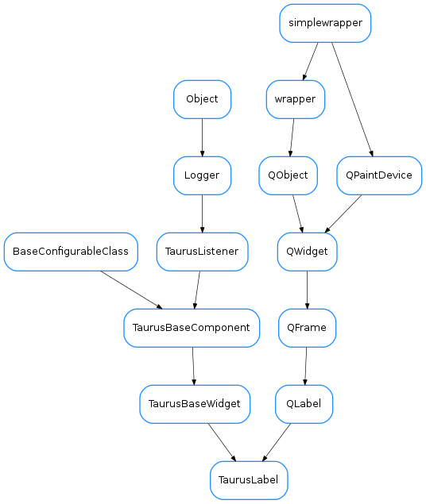

TaurusLabel¶

-
class
TaurusLabel(parent=None, designMode=False)[source]¶ Bases:
PyQt4.QtGui.QLabel,taurus.qt.qtgui.base.taurusbase.TaurusBaseWidget-
DefaultAlignment= <PyQt4.QtCore.Alignment object>¶
-
DefaultAutoTrim= True¶
-
DefaultBgRole= 'quality'¶
-
DefaultFgRole= 'rvalue'¶
-
DefaultModelIndex= None¶
-
DefaultPrefix= ''¶
-
DefaultShowText= True¶
-
DefaultSuffix= ''¶
-
autoTrim¶ This property holds the
Access functions:
-
bgRole¶ This property holds the background role. Valid values are ‘’/’None’, ‘quality’, ‘state’
Access functions:
-
dragEnabled¶ This property holds the
Access functions:
TaurusLabel.isDragEnabled()TaurusLabel.setDragEnabled()TaurusLabel.resetDragEnabled()
-
fgRole¶ This property holds the foreground role (the text). Valid values are:
- ‘’/’None’ - no value is displayed
- ‘value’ - the value is displayed
- ‘w_value’ - the write value is displayed
- ‘quality’ - the quality is displayed
- ‘state’ - the device state is displayed
Access functions:
-
model¶ This property holds the unique URI string representing the model name with which this widget will get its data from. The convention used for the string can be found here.
In case the property
useParentModelis set to True, the model text must start with a ‘/’ followed by the attribute name.Access functions:
TaurusBaseWidget.getModel()TaurusLabel.setModel()TaurusBaseWidget.resetModel()
See also
-
modelIndex¶ This property holds the index inside the model value that should be displayed
Access functions:
See also
-
prefixText¶ This property holds a prefix text
Access functions:
-
suffixText¶ This property holds a suffix text
Access functions:
-
textInteractionFlags¶ Specifies how the label should interact with user input if it displays text.
-
useParentModel¶ This property holds whether or not this widget should search in the widget hierarchy for a model prefix in a parent widget.
Access functions:
TaurusBaseWidget.getUseParentModel()TaurusBaseWidget.setUseParentModel()TaurusBaseWidget.resetUseParentModel()
See also
-